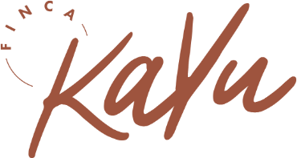

Planbord
Ben je gast? Open de link uit ons WhatsApp-bericht.Are you a guest? Please open the link in our WhatsApp message.
Wachtwoord vergeten?
Nieuw wachtwoord kiezen
…
—
Het poetsteam ziet dezelfde pagina in het Spaans, zonder gastnamen
Wat hier staat is van jouw bedrijf. In de proefversie werken de naam, het logo en de kleur meteen door in de app; de andere instellingen worden bewaard en komen stap voor stap in de hele app terecht.
Bedrijf
Wat je verhuurt
Regels
Nog niet instelbaar, komt later: prijzen per nacht, persoon en stroom; check-in- en check-outtijden; teksten aan gasten; talen; koppeling met je boekingsprogramma.
Tik op een regel om het bedrag te wijzigen. Telt mee bij Cijfers onder Uit.
Gasten zien dit op hun gastenpagina en in de berichten die je vanuit de app stuurt.
Loes en jij gebruiken dezelfde code. Schrijf hem op en leg hem in de kast: zonder code kan niemand de kluis openen, ook wij niet, en er is geen "code vergeten". Liever een korte zin dan een kort woord.
Vul de code van de digitale kluis in. Daarna blijft Geld 5 minuten open.
Maak een foto van de bon of de factuur. Twee pagina's? Maak dan twee foto's. Bedrag en winkel mag je leeg laten.
Alles waarop een gast een reactie van ons verwacht. Praten doe je in WhatsApp.
Hieronder sla je deze periode op als bestand voor Excel.
Wie er verbleef, met document, handtekening en wat naar SES is gemeld. Als pdf, om te delen of te bewaren.
Overnachting, fooi of korting
Iets anders
Elke tik wordt meteen opgeslagen. De gast ziet dezelfde lijst op zijn eigen pagina.
Voor als er iets is wat iedereen op de finca meteen moet weten. De tekst komt als rode balk bovenaan de gastenpagina. Schrijf hem in het Nederlands: de app vertaalt hem vanzelf, zodat elke gast hem in zijn eigen taal ziet. Daarna stuur je hem hieronder per gast via WhatsApp (ook in zijn taal), want de gastenpagina piept niet.
Iedereen die nu op de finca staat. Tik, controleer, verstuur, volgende.
Deze tekst zien gasten boven de KaYu-plank als ze ontbijt bestellen. Schrijf hem in het Nederlands: de app vertaalt hem vanzelf in de taal van de gast.
Dit bericht stuur je de dag voor vertrek aan wie nog iets open heeft staan. Schrijf het in het Nederlands: de app vertaalt het vanzelf in de taal van de gast. Laat {naam} en {bedrag} staan: daar vult de app de naam van de gast en het bedrag dat open staat in (met het €-teken erbij).
Dit is de handleiding zoals gasten hem zien op hun pagina en in het welkomstbericht. Tik op een potloodje, pas de Nederlandse tekst aan en bewaar: de app vertaalt dat blok vanzelf in de andere talen. Kies een andere taal om een vertaling te bekijken of te verbeteren.
De regels bovenin het welkomstbericht (prijs, inchecktijden, route, poort, wifi en voor campers de drie kernregels) staan vast. Wil je die veranderen, vraag het Claude.
Deze broodjes kunnen campers op hun pagina bestellen. Pas een prijs aan, haal een broodje weg of voeg er een toe. Een nieuwe naam vertaalt de app vanzelf in de taal van de gast. Bestellingen die al gedaan zijn, blijven zoals ze zijn.
Nieuw broodje
Gasten die er die dag zijn, zien dit op hun eigen pagina en kunnen zich opgeven tot de dag en tijd die je hieronder kiest (gewoonlijk 12:00 uur op de dag zelf). Aanmeldingen komen automatisch op hun bon. Op het startscherm staat daarna per gast een WhatsApp-knop met een uitnodiging in hun eigen taal.
Typ in het Nederlands, de app vertaalt het. Gasten zien het op hun pagina en in het WhatsApp-bericht.
Eén gedeelde lijst voor jullie samen. Tik een regel aan als hij klaar is, dan is hij weg.
Iedereen die er vandaag is. Tik op een naam om zijn honesty bar te openen. Het bedrag is wat er nu openstaat: bij campers inclusief de overnachtingen, bij kamers alleen ontbijt en bar.
Hoe is er betaald?
Een bankoverschrijving blijft in Let op staan tot je op Binnen tikt.
Vul het contante bedrag in; de rest rekent de app als bankoverschrijving.
Stappen
Wat moet er gebeuren?
MyTourist stuurt de gast geen mail; de boeking en de factuur maak je daar verder af zoals altijd.
De kamer en de hele finca gaan voor deze nachten dicht in MyTourist; er komt geen boeking en geen factuur, en de check-in gaat niet naar SES. Met gastenpagina staat de gast als groene balk in de kalender, met een gewoon gastprofiel. Zonder gastenpagina komt er een grijze balk "Dicht". Weer openzetten kan via het profiel of die balk.
Eigen plek, staat niet in MyTourist. Bar en rekening alleen in het gastenverblijf, via de gastenlink.
Tik op een categorie om producten te kiezen. Met het potloodje pas je de naam of de categorie aan, of haal je een product van de lijst.
Bon sturen
Pas een prijs aan en sla op. Geldt voor alle nieuwe consumpties.
Dit kan niet ongedaan gemaakt worden.
Kies de taal, tik op de knop en plak het bericht in WhatsApp. Staat de gast aan de poort? Tik op QR-code tonen en laat hem die scannen. De gast vult zelf datums en gegevens in, daarna staat de boeking vanzelf in de app.
Of vul de boeking zelf in:
Per nacht aan of uit zetten kan later, bij de boeking zelf.